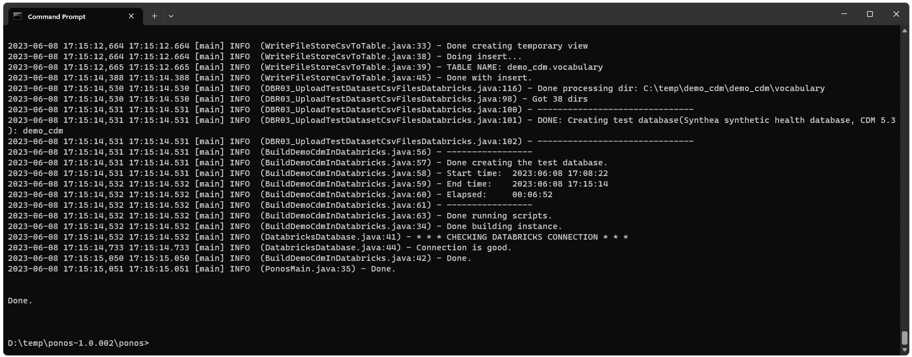
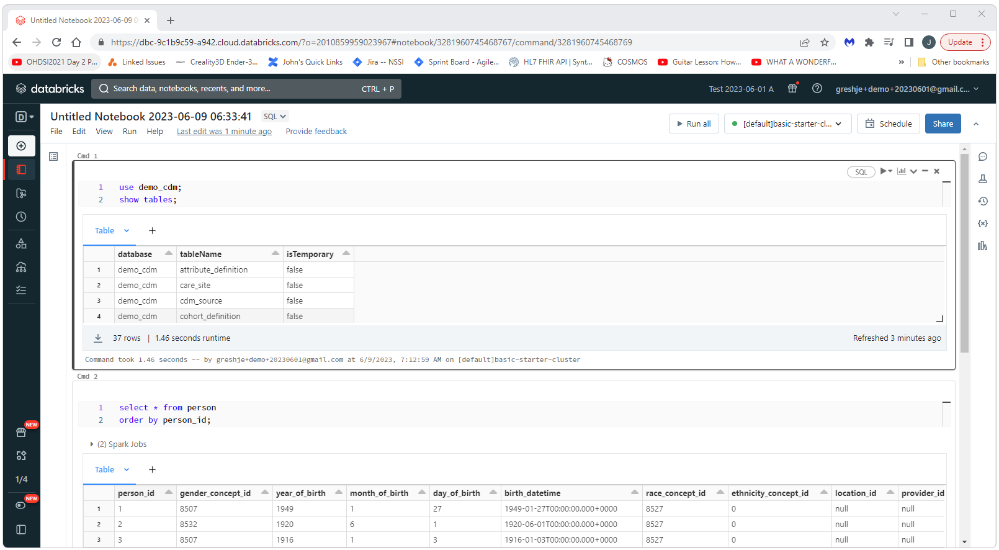

OHDSI Databricks User Group
OHDSI Databricks User Group OHDSI Databricks User Group Developer
How-tos:
OHDSI on Databricks Quick Start Guide
Introduction
This quick start guide gives the basics for how to create a test (demo_cdm) instnace of the CDM in Databricks and then how to get an existing CDM in Databricks connected to OHDSI. This guide is for a standalone Tomcat instance (i.e. not Broadsea). Ponos can also be used with Broadsea. See the Broadsea Implementation Guide for guidance on setting up a Databricks CDM with Broadsea.Download and Install Ponos
Ponos is a tool that can be used to automate most of the processes required to get an instance of a CDM ready for OHDSI use. Detailed instructions for downloading and installing Ponos can be found on the Ponos Install page.
Create an Instance of the DEMO_DB CDM in Databricks
To create an instance of the DEMO_DB CDM in Databricks, simply execute run-ponos.bat with the db-demo parameter as shown below:run-ponos.bat db-demo
This will create a complete instance of the DEMO_DB instance in
your Databricks instance as shown below. You can then use this instance
as your CDM. When the process has completed, you should see something
similar to the following (note that the process took about 6 min):

You should then be able to open a notebook in Databricks and
query the new instance to confirm it was created.

Connect an Existing Databricks CDM to OHDSI
To connect an existing CDM to OHDSI simply execute run-ponos.bat with the db-init parameter as shown below:run-ponos.bat db-initThis will execute all of the steps required to make your Databricks CDM available to OHDSI. When this process has completed, you should see output similar to the following:

Install the Required Software for Atlas Running on Standalone Tomcat
Detailed istructions for installing and configuring all of the software required to run Atlas as a standalone application (i.e. not in a Docker container using Broadsea) are available at https://nachc-cad.github.io/fhir-to-omop/pages/navbar/how-tos/developer-how-tos/install-eclipse-yes/InstallEclipseYes.htmlInatall, Configure, and Run Atlas
Detailed instructions for installing and configuring Atlas as a standalone Tomcat application can be found at https://nachc-cad.github.io/fhir-to-omop/pages/navbar/ohdsi-tools/atlas/Atlas.htmlStart Tomcat and Navigate to Atlas
You should then be able to start Tomacat and see your Databricks CDM instance in Atlas. Start Tomcat, open a browser, and navigate to:http://localhost:8080/atlas
When you navigate to the Datasources tab and select the People
report, you should see something similar to the following (this image
shows data from the DEMO_CDM database).

Configuration of Vocabularies
Atlas allows for the use of multiple data sources and each data source is generally associated with a vocabulary. Therefore, Atlas needs to know what vocabulary to use for certain operations such as concept searches and the creation of concept sets. At the very bottom of the left side menu there is a “Configuration” option. Select this option to indicate what vocabulary should be used.
This is important: If you skip this step you will have issues with
vocabulary operations and errors/exceptions that will not necessarily
immediately make you remember that this is causing the problem!!!
Select the Configuration option from the left side menu and then select the radio buttons for Vocabulary Version and Record Counts (RC/DRC).